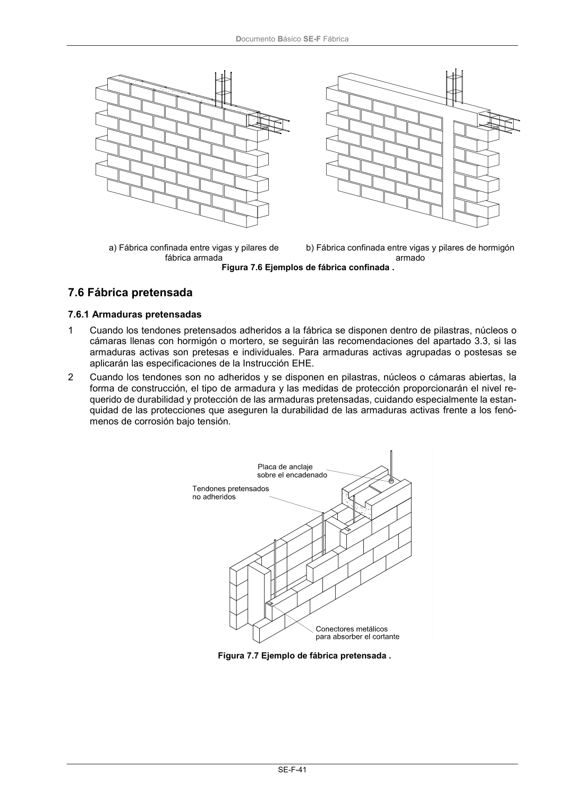

DB-SE-F · 7.6 Fábrica pretensada · 7.6.1 Armaduras pretensadas · versión 2019-12-20
SHA256: e3e0805c3b4c307519c26dc34c3fdbf143d842edd013c91b0f52d2c73403d91c · página física 45 de 70 · métodos de encabezado
solo si están cotejados.
Formatos: Markdown · JSON de bloques · PDF p. 45 · imagen PNG
Documento Básico SE-F Fábrica SE-F-41 a) Fábrica confinada entre vigas y pilares de fábrica armada b) Fábrica confinada entre vigas y pilares de hormigón armado Figura 7.6 Ejemplos de fábrica confinada . 7.6 Fábrica pretensada 7.6.1 Armaduras pretensadas 1 Cuando los tendones pretensados adheridos a la fábrica se disponen dentro de pilastras, núcleos o cámaras llenas con hormigón o mortero, se seguirán las recomendaciones del apartado 3.3, si las armaduras activas son pretesas e individuales. Para armaduras activas agrupadas o postesas se aplicarán las especificaciones de la Instrucción EHE. 2 Cuando los tendones son no adheridos y se disponen en pilastras, núcleos o cámaras abiertas, la forma de construcción, el tipo de armadura y las medidas de protección proporcionarán el nivel re- querido de durabilidad y protección de las armaduras pretensadas, cuidando especialmente la estan- quidad de las protecciones que aseguren la durabilidad de las armaduras activas frente a los fenó- menos de corrosión bajo tensión. Figura 7.7 Ejemplo de fábrica pretensada .
